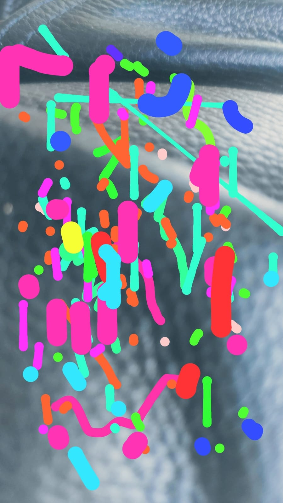

Gallery


"The reading of Pape's texts reveals to us the intransigent technical-compositional research, on which his music is based, and the sources of his inspiration, that is his versatile interests ranging from poetry to mathematics, from theater to natural sciences and philosophy. His approach to composition is eminently trans-disciplinary."
"In his writings Gerard Pape often underlines that other disciplines like natural sciences, architecture, psychoanalysis, philosophy, are necessary in order to achieve musical innovations. Principles and achievements of other fields can be 'translated' in music. He is particularly interested in this trans-disciplinary translation. Asserting that, somehow he also acknowledges that in this historical moment music is not anymore able to renew itself by itself..."
MusiPoeSci, Introduction and Interview by Leopoldo Siano
"In my most recent works, pitch (better called 'frequency', which is the more general term) has a renewed importance for me, but now, as only one dimension of composite 'sound-based' harmony. Pitch is perceived when sound spectra fundamental and partial frequencies are relatively stable or periodic, but, even in this case, pitch is not necessarily more important than the other sonic dimensions of timbre, intensity, duration, pulsation, vibrato, space, if the composition is 'sound based' and not 'note based'."
"The 'harmony' that I have found is not a consonant and synchronous 'One' where all dimensions of timbre and time fit together nicely. My harmony is a 'heterophonic-spectral multiplicity' rather than a 'polyphonic-harmonic unity'. In my music, we are closer to the 'harmony' of metaphysical violence that results from cosmic struggles between clashing forces of life and death, creation and destruction..."
MusiPoeSci, Interview, answers of Gerard Pape
In 2023, Gerard Pape wrote a new book called IANNIS XENAKIS AND THE ETHIC OF ABSOLUTE ORIGINALITY. It was published in both English and French by the French publisher, UTEURP.
In 1991, I moved to Paris to direct the Ateliers UPIC, a création center whose mission was to promote and make available the UPIC, a unique synthésizer with a graphical interface conceived by Iannis Xenakis and developed by his research center, the CEMAMu. I continue to research the question of a notation that would be adequate for music based on sound itself. Here you see a photo that I took and then on which I drew. I made a graphical notation which could be transcribed into more conventional notation and played by acoustical or electronic means. What about notation not just for the émission of Sound but also for its life in the Space-Time Continuum ? What is in question here is how to represent the frequency, rhe timbre, the dynamics and the space-time in which the sounds move. With UPIC, frequency is on the X axis and Time on the Y. All other sonic parameters, such as dynamics, timbre and space are hidden. Here, color is timbre, width of each arc is dynamics and the photographic black background is the unknown space or terrain in which the sounds will voyage. Sounds are only able to be précisely localisable at the moment when they appear in the space time continuum. The chaotical nature of their life as sounds makes it impossible to predict the path they will take after émission. This is where quantum indeterminism meets chaotical déterminism. Not all sonic paths are possible for the sound. There is a strange attractror that can be calculated that will détermine that given sound X and given space Y, there is a unique set of sonic possibilités for movement of sound X in space Y. I postulate that for the unique combination of any sound in any given space that we can find that sound in that space somewhere on the Strange Attractor that déterminés where the sound can be potentially, but which is unable to predict exactly where and when in the space it will be. In fact, the sound can be many places at once, but not all places at once. Sound is not a phenomena of pure indeterminism.
